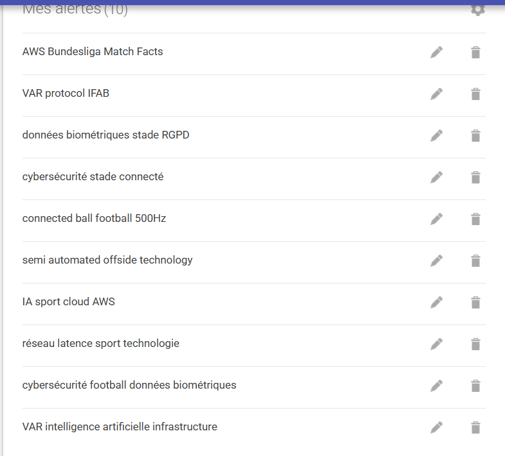
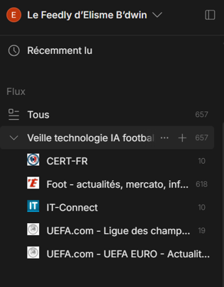

Veille Technologique
BTS SIO SISR
Analyse des enjeux SISR derrière l'IA dans le football.
BTS SIO SISR
Analyse des enjeux SISR derrière l'IA dans le football.
Dans le cadre de mon BTS SIO option SISR, j'ai réalisé une veille technologique sur l'intelligence artificielle dans le football.
J'ai choisi ce sujet car l'IA dans le football ne concerne pas seulement le sport. Elle repose aussi sur des infrastructures informatiques importantes : caméras, capteurs, réseau faible latence, cloud, traitement de données en temps réel, cybersécurité et protection des données personnelles.
Ma problématique est donc : comment l'intelligence artificielle dans le football transforme-t-elle les besoins en réseau, cloud et cybersécurité ?
Pour réaliser cette veille, j'ai utilisé plusieurs outils :
Cette organisation m'a permis de suivre régulièrement l'évolution du sujet et de sélectionner les informations les plus utiles pour mon parcours SISR. J'ai ensuite regroupé ces informations dans un tableau de synthèse mis à jour de manière régulière.

Capture de mes alertes Google utilisées pour suivre l'IA dans le football, la VAR et la cybersécurité des stades.

Capture de mon dossier Feedly regroupant mes sources principales : FIFA, AWS, CNIL, ANSSI et IFAB.
| Source | Description | Thème SISR |
|---|---|---|
| FIFA | Fédération Internationale de Football Association | Réseau, VAR, IA |
| AWS | Amazon Web Services | Cloud, traitement de données |
| CNIL | Commission Nationale de l'Informatique et des Libertés | Cybersécurité, RGPD |
| ANSSI | Agence Nationale de la Sécurité des Systèmes d'Information | Cybersécurité, protection des données |
| IFAB | International Football Association Board | VAR, protocole sécurité |
Ma veille a été suivie entre juillet 2024 et avril 2026 à l'aide de Google Alerts, Feedly et d'un tableau de synthèse. Les alertes Google me permettaient de recevoir automatiquement des informations, tandis que Feedly me servait à centraliser mes sources. Les informations retenues étaient ensuite classées selon leur date, leur source, leur thème SISR et leur apport personnel.
| Date | Source | Thème SISR | Apport personnel |
|---|---|---|---|
| Juillet 2024 | FIFA | Réseau faible latence | Compréhension de l'importance du réseau pour la VAR |
| Août 2024 | AWS | Cloud temps réel | Intérêt pour l'architecture cloud hybride |
| Septembre 2024 | CNIL | Cybersécurité RGPD | Conscience des enjeux de protection des données |
| Octobre 2024 | ANSSI | Cybersécurité menaces | Apprentissage des bonnes pratiques de sécurité |
| Novembre 2024 | IFAB | VAR sécurité | Compréhension des protocoles de sécurité VAR |
| Décembre 2024 | FIFA | IA ballon connecté | Intérêt pour les capteurs et traitement de données |
Cette veille m'a permis de comprendre que l'intelligence artificielle dans le football ne fonctionne pas seule. Elle dépend d'une infrastructure informatique complète : réseau, caméras, capteurs, serveurs, cloud, sécurité et stockage des données.
Elle m'a aussi permis de faire le lien avec ma formation SISR. J'ai mieux compris l'importance de la disponibilité du réseau, de la faible latence, de la sécurisation des flux vidéo et de la conformité RGPD.
Cette veille m'a appris à rechercher des informations fiables, à comparer plusieurs sources, à éviter les sources non vérifiées et à transformer une actualité technologique en connaissance professionnelle.
| Compétence | Description |
|---|---|
| Recherche d'informations | Utilisation d'outils comme Google Alerts et Feedly |
| Analyse technique | Compréhension des enjeux réseau et sécurité |
| Synthèse | Rédaction de tableaux de synthèse et rapports |
| Veille technologique | Suivi régulier des évolutions technologiques |
| Communication | Présentation claire des informations techniques |
L'IA dans le football ne repose pas uniquement sur des algorithmes. Elle dépend aussi d'une infrastructure technique capable de collecter, transporter, traiter et sécuriser les données en temps réel.
Dans le cas du hors-jeu semi-automatisé, la FIFA explique que le système utilise des caméras de tracking, des données de position des joueurs et un capteur dans le ballon. Ces données doivent ensuite être transmises rapidement vers les arbitres vidéo pour aider à la décision. Cela montre que le réseau joue un rôle essentiel dans ce type de technologie.
Source : FIFA — Semi-automated offside technology
https://inside.fifa.com/innovation/world-cup-2022/semi-automated-offside-technology
Pour réduire la latence, une solution possible est l'Edge Computing. Cela consiste à traiter les données au plus près de leur source, par exemple directement dans le stade ou à proximité. Cette approche évite d'envoyer immédiatement toutes les données vers un datacenter éloigné.
Ericsson donne un exemple de stade connecté où des vidéos captées sous plusieurs angles sont envoyées via un réseau dédié vers un site de Mobile Edge Computing pour être traitées.
Source : Ericsson — 5G stadiums and Mobile Edge Computing
https://www.ericsson.com/en/blog/2021/4/for-the-love-of-the-game-5g-immersive-experiences-in-5g-stadiums-and-beyond
Cette veille m'a donc permis de comprendre que le cloud est utile pour le stockage, les statistiques et l'analyse de grands volumes de données, mais que pour une décision rapide comme la VAR, le traitement local est important afin de limiter le temps de réponse.
Dans une infrastructure VAR ou IA, tous les flux réseau n'ont pas la même importance. Les flux vidéo de la VAR, les communications entre arbitres et les données du ballon connecté sont plus critiques qu'un accès Wi-Fi public destiné aux spectateurs.
La QoS, ou Qualité de Service, permet de prioriser ces flux importants. Elle sert à limiter la latence, la gigue et la perte de paquets. Un exemple concret est le déploiement de la VAR pour la Fédération turque de football : Sports Video Group explique que le transport vidéo VAR était sensible au délai, à la gigue et à la perte de paquets, avec une solution conçue pour garantir la qualité des flux.
Source : Sports Video Group — VAR Turkish Football Federation
https://www.sportsvideo.org/2018/10/04/case-study-net-insight-facilitates-var-deployment-for-the-turkish-football-federation/
Cette veille m'a aussi amené à réfléchir à la segmentation réseau. Dans un stade connecté, il est important de séparer les réseaux : caméras, VAR, administration, supervision et Wi-Fi public. Cela permet de limiter les risques de saturation, d'intrusion ou de mauvaise propagation d'un incident.
L'ANSSI recommande le cloisonnement des moyens physiques et logiques, ainsi que le filtrage des flux entre différents segments réseau.
Source : ANSSI — Guide d'hygiène informatique
https://cyber.gouv.fr/publications/guide-dhygiene-informatique
Enfin, la sécurité ne concerne pas seulement le réseau. Elle concerne aussi les accès physiques et logiques. Le protocole IFAB précise que seules les personnes autorisées peuvent entrer dans la salle vidéo VOR ou communiquer avec le VAR, l'AVAR ou le replay operator pendant le match. Cela montre que la salle VAR doit être considérée comme une zone sensible à protéger.
Source : IFAB — Protocole officiel de la VAR
https://www.theifab.com/laws/latest/video-assistant-referee-var-protocol/
Cette veille m'a permis de mieux comprendre le rôle d'un technicien SISR dans une infrastructure moderne. Derrière une technologie comme l'IA dans le football, il faut penser au réseau, à la disponibilité, à la sécurité des flux, à la priorité du trafic et à la protection des données.
J'ai retenu que l'Edge Computing permet de réduire la latence en rapprochant le traitement des données du stade. J'ai aussi compris que la QoS permet de donner la priorité aux flux critiques, comme la vidéo VAR et les communications entre arbitres. Enfin, la segmentation réseau permet de séparer les systèmes sensibles du Wi-Fi public afin de limiter les risques de saturation ou d'intrusion.
Cette analyse m'a permis de relier ma veille à des notions vues en SISR : réseau temps réel, cloud, supervision, VLAN, filtrage, haute disponibilité et cybersécurité.